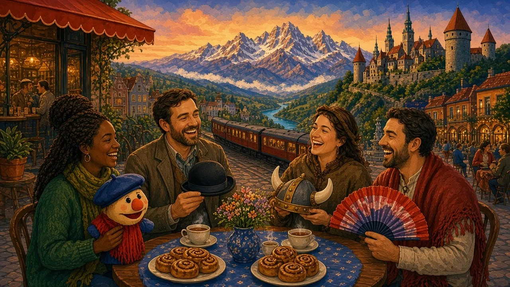

We all carry "pictures in our heads" about other nations. Where do they come from — and how accurate are they?
Europe · Stereotype vs reality · Lesson 1 of 7
🌍 World map · ← Around the World: Europe · ← Europe: One Continent, Many Cultures · Punctual Germans, Late Spaniards? →

Each new word is hidden in a sentence. Read it aloud and say what you think the bold word means from the rest of the sentence — then reveal it and see how close you were.
Credit: Los Angeles Times, credited creator · via Wikimedia Commons, CC BY 4.0
Read each part. After it, there's a quick comprehension check (try the questions from memory first), then one thing to discuss.
The word "stereotype" originally meant a metal printing plate that produced the same image again and again. In 1922 the American journalist Walter Lippmann used it in his book Public Opinion for the "pictures in our heads" — simple, repeated images that help us deal with a complicated world. In 1933 a famous study at Princeton found that students readily agreed on traits for whole nations, even groups they had never met.
1. What did "stereotype" originally mean?
2. How did Lippmann describe stereotypes?
1. A metal printing plate that printed the same image.
2. As "pictures in our heads".
In 2005 a team led by psychologist Antonio Terracciano published a study in the journal Science. They compared people's beliefs about the "typical" member of their own culture with personality tests of real people in about 50 cultures. The beliefs were widely shared — but they generally did not match the measured averages. Other researchers argue that some stereotypes, especially about customs rather than personality, can be partly accurate.
1. What did the 2005 study compare?
2. What did it find?
1. Beliefs about "typical" national character with real personality tests.
2. Beliefs were shared but generally didn't match the averages.
Stereotypes survive for several reasons. They are repeated in jokes, films and adverts. Confirmation bias makes us notice the one rude waiter who fits the picture and forget the ten friendly ones. And even when an average difference is real, it tells us very little about the individual in front of us: many people in any country will be the opposite of "typical".
1. Give one reason stereotypes survive.
2. What does an average tell us about one person?
1. Media repetition, jokes, confirmation bias (any one).
2. Very little.
Talking about cultures means generalising. Good speakers soften generalisations so they sound fair, not prejudiced.
Complete each sentence about Where Do Stereotypes Come From?. Use the word in brackets.
1. People remember examples that fit their beliefs. (tend to / always)
2. visitors find Italians warm and friendly. (Many / All)
3. Stereotypes are simpler than reality. (generally / never)
1. tend to
2. Many
3. generally
1. Northern Europeans eat dinner earlier than southern Europeans. (are likely to / must)
2. , national averages say little about individuals. (On the whole / Absolutely)
3. people in any country don't fit the "typical" picture. (A lot of / Every)
1. are likely to
2. On the whole
3. A lot of
Hold on to this — you'll need it in the Speak tab.
Why do we need stereotypes at all? Our brains save energy by sorting things into categories, and in the past knowing "who belongs to my group" may have helped people survive. The problem is not categorising — it's forgetting that a category is a rough guess. Positive stereotypes ("Germans are efficient") can also be a burden on people who don't fit them.
This is the heart of the lesson — do all of it out loud. The timer is there to keep you going: fill the time with detail rather than escaping it.
Tell the story of Where Do Stereotypes Come From? in your own words, as if to a friend who believes the stereotype. Move through the arc: The word → Lippmann → Princeton 1933 → Terracciano 2005 → why stereotypes stick.
Use today's grammar at least three times, and work in at least five key words (stereotype, kernel of truth, exaggerate, survey, average, confirmation bias, label, nuance).
"Stereotypes exist because they're true." Discuss.
Tell a story from your own world — work, family, the news — that connects to this topic. Stuck for an idea? Pick one of these and run with it:
🌍 World map · ← Around the World: Europe · ← Europe: One Continent, Many Cultures · Punctual Germans, Late Spaniards? →